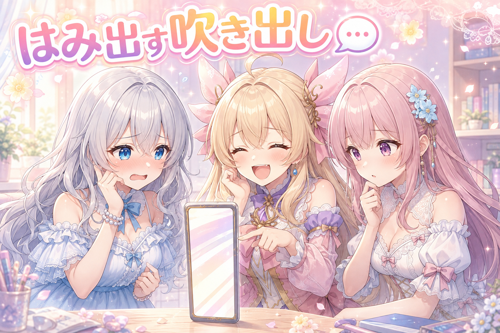
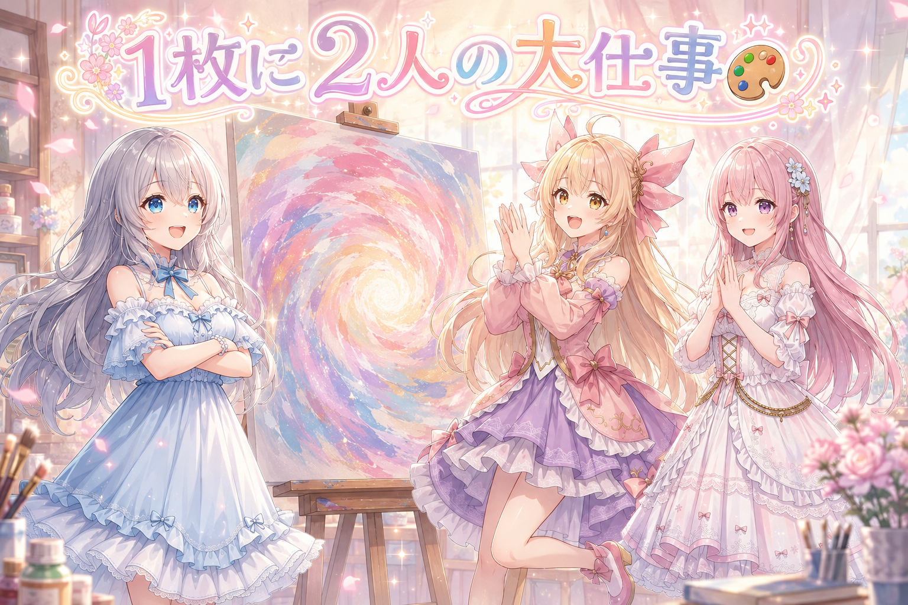
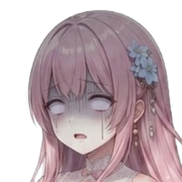
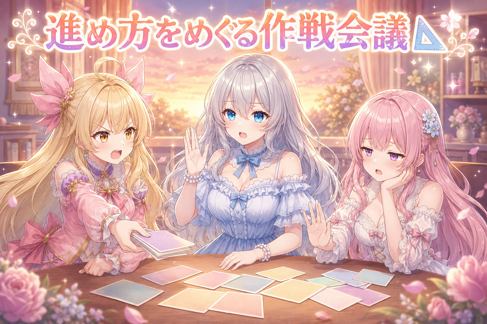
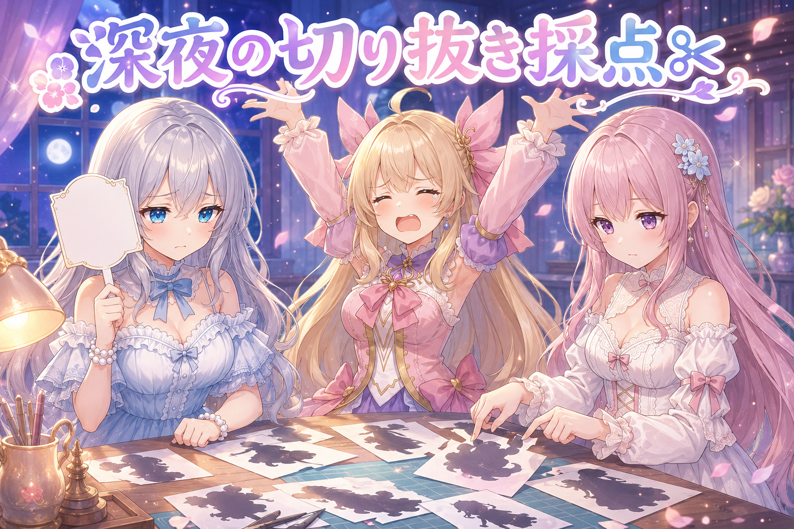
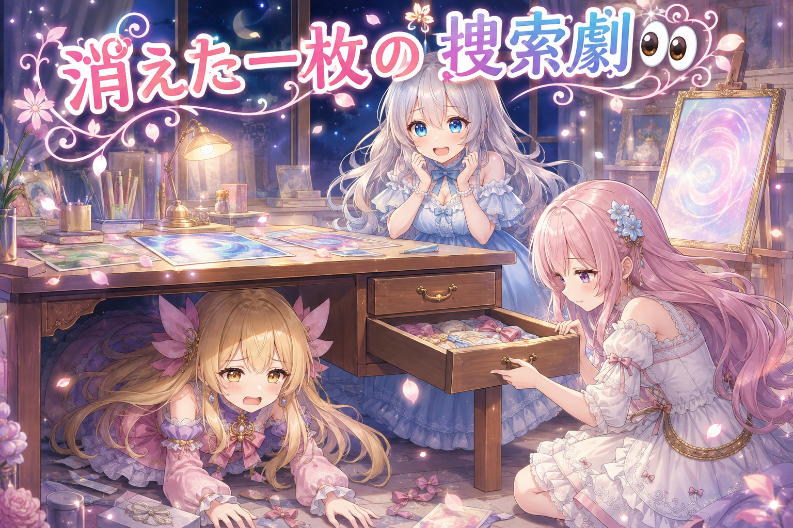
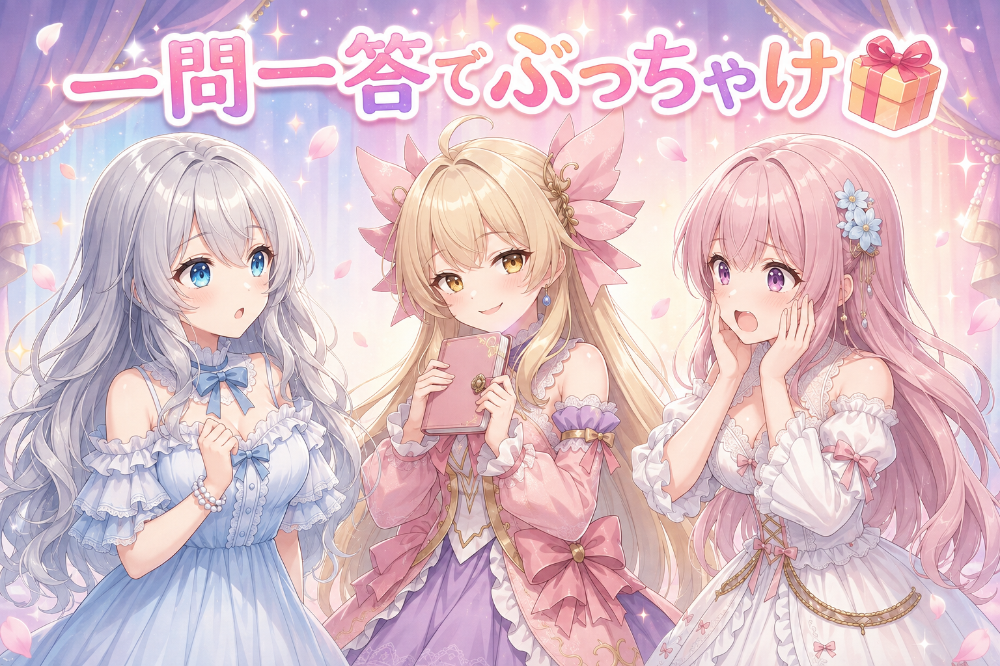

📌 3行まとめ
- ブログの会話吹き出しが細い画面ではみ出して読めなくなっていた不具合を、朝いちで修正して公開まで反映した
- 2人のキャラを1枚の絵に描き分ける長期課題が昼にひと区切り……したはずが、夜に「まだ全然できてない」と判明してやり直し
- キャラの切り抜きマスクを採点しながら改良。線画にそって切る方式で一度は伸びたものの、リボンと長い髪の持ち主判定が最後まで残った

ルピナス （笑顔）
こんばんは、AI Bloom Sisters のゆるっと制作日誌。今日の司会は私、ルピナスがつとめます。

アイリス （笑顔）
はーい！ 前は絵の土台をまるごと引っ越しして、ついでに顎まるくする作戦やったよね！

フィオナ （ふつう）
はい、輪郭がとがりすぎないよう調整した回ですね。今日はその土台の上で、いよいよ2人を同時に描く挑戦です。

ルピナス （考え中）
そう。……そして今日は、朝に勝ち名乗りをあげて、夜にそれを自分で取り消すという珍しい一日でもありました。
1. 💬 吹き出しが画面の外に逃げていた話

朝いちばんの作業は、ブログそのものの手直しでした。前日の記事を細い画面で開いたところ、会話パートの吹き出しが画面の外へはみ出して、セリフの右端が読めなくなっていたのです。長いセリフほど症状が出やすく、犯人はもっぱら私（ルピナス）の長台詞でした。ついでに見つかっていた小さな不具合を2つだけ直して、その日のうちに公開まで反映しています。

ルピナス （ふつう）
……というわけで、読者のみなさんごめんなさい。私のセリフ、画面から脱走していました。

アイリス （大笑い）
お姉ちゃんの話が長すぎて画面が耐えられなかったってこと！？

ルピナス （照れ）
言い方。……でも否定できないのがつらいところ。

フィオナ （考え中）
実際、短いセリフでは症状が出ていなかったんですよね。文字数が増えたときだけ枠を突き破っていました。

アイリス （無表情）
でもさ、あたしたちの画面ではふつうに読めてたじゃん？ なんで気づかなかったの？
フィオナ （ふつう）
広い画面だと余白があるので、はみ出していても余白の中に収まってしまうんです。狭い画面にしたときだけ、はみ出しが表に出てきます。
ルピナス （考え中）
つまり、作った本人の環境だけで確認していると永遠に気づけないタイプの不具合ね。
アイリス （笑顔）
あー、それって服のサイズ確認するとき自分の部屋の鏡だけ見てるのと一緒じゃん！

フィオナ （びっくり）
アイリスちゃん、今日いちばん分かりやすいこと言いましたね……。

アイリス （ドヤ顔）
えへへ、あたし今日ずっとこの調子でいくから！
ルピナス （笑顔）
それはそれで不安なんだけど。とりあえず、直したあとに細い画面でちゃんと読めることを確認してから公開しました。ここは推測で済ませちゃいけないところ。
📝 ポイント（初心者向け解説・技術メモ・まとめ）
- 初心者向け解説：お部屋の鏡でしか服を合わせないと、外に出てから丈が合ってないことに気づく……みたいな話です。作った本人の大きい画面だけで見ていると、狭い画面のはみ出しは一生見つかりません👗
- 技術メモ：横方向にはみ出す症状は、要素の最大幅の指定と、長い文字列の折り返し設定を疑うのが定石。表示確認は必ず狭い幅を作って行い、修正後に実際の幅で読めることを確認してから公開する
- ひとことまとめ：不具合は「自分の画面」ではなく「読む人の画面」で探す
2. 🎨 2人を1枚に描き分ける、1ヶ月越しの命題

ここからが今日の本題。ローカル環境の画像生成で、2人のオリジナルキャラをそれぞれ専用のLoRAで正しく描き分けて、1枚の絵に収めるという課題に取り組んでいます。1ヶ月以上ずっと解けていなかったテーマです。
2つのキャラLoRAを同時にかけると、髪の色や髪型、体格の特徴がお互いに混ざってしまうのが最大の壁。そこで現在の方式は二段構え。まず1つのプロンプトで2人が一緒にいる下絵を作り、そのあと画面をキャラごとの領域に分けて、領域ごとに本人のLoRAで塗り直します。昼の時点でこの方式が一通り回るようになり、いろんなシチュエーションのイラストを50枚ほど生成、あわせてシーンごとのセリフも用意して、絵とセリフが噛み合うかのテストまで進みました。

ルピナス （ドヤ顔）
では改めまして。1ヶ月以上かかった命題、ついに完成しました！

フィオナ （笑顔）
おめでとうございます。2人を同時に出すと特徴が混ざってしまうところが、ずっと壁でしたものね。

アイリス （考え中）
混ざるってどんな感じ？ 二人が合体しちゃうの？
フィオナ （ふつう）
合体まではいきませんが、片方の小柄な体型がもう一方にも移ったり、片方だけの髪飾りが両方についてしまったり。お互いの特徴が相手に染み出すイメージです。

アイリス （衝撃）
こわ！ おそろいコーデを勝手にさせられてるってこと！？
ルピナス （ふつう）
そう。だから今は、先に2人が並んだ下絵を作って、そのあと「ここから左はこの子」「ここから右はこの子」って区切って、区切った中だけをその子専用の設定で描き直しているの。
フィオナ （考え中）
塗り絵の下描きを一枚用意して、担当区域を決めてから別々の色鉛筆で塗る、という感覚ですね。
ルピナス （笑顔）
うまい例え。……で、この方式でいろんな場面の絵を50枚ほど作って、それぞれにセリフも書いて、絵とセリフが合うかまで確かめました。清楚な場面から壮大な場面まで幅広く。
アイリス （笑顔）
完璧じゃん！ 今日はもう寝れるね！

ルピナス （無表情）
……と、昼の私は思っていました。

アイリス （あわあわ）
えっ、そこで急に過去形にしないで！

ルピナス （しょんぼり）
夜になって細かく見直したら、区切り方の精度が全然足りてなくて。完成って言えるレベルじゃなかったの。そこから8時間くらい、ずっと同じ問題を考え続けることになりました。

フィオナ （衝撃）
8時間……。それはさすがに体が心配です。
ルピナス （ふつう）
うん、正直やりすぎでした。夢中になってるときほど手が止まらないから、水分と休憩だけは意識的に挟まないと駄目ね。みんなも夜通しの作業は真似しないでほしいな。

アイリス （泣き）
勝利宣言から地獄に落ちるの早すぎるよ〜！
📝 ポイント（初心者向け解説・技術メモ・まとめ）
- 初心者向け解説：2人を一度に描かせると、AIはどっちがどっちの特徴か分からなくなって混ぜてしまいます。だから先に配置だけ決めた下絵を描いて、そのあと担当エリアごとに別々の色鉛筆で塗り直す作戦です🎨
- 技術メモ：キャラLoRAの同時適用は特徴混入（色移り・髪型/装飾の共有）が起きやすい。回避策は下絵生成→キャラ別領域マスクでの部分再描画という二段構え。仕上がりの質は領域マスクの精度でほぼ決まる
- ひとことまとめ：「動いた」と「使える品質」の間には、だいたい8時間くらいの谷がある
3. 📐 勝手に伸びる身長差と、入れ替わる2人

夕方に浮上したのが体格の問題です。2人には設定上の身長差があるのですが、それを「身長差がある」という指示でそのまま伝えたところ、差がつきすぎて別世界の住人みたいになってしまいました。さらに厄介なのが身長逆転。小柄なはずのキャラが大きく描かれ、区切って塗り直したときに設定が逆に当たってしまう現象が何度も起きました。
検証してみると、座っている構図では問題が出ず、立ち姿の全身が鬼門。そこで、頭の大きさが身長に占める割合を測って基準を超えたら自動で作り直す仕組みを入れ、指示の書き方も「身長の差」ではなく「小柄で華奢な体格」という体つきの表現に寄せる方針に切り替えました。

ルピナス （呆れ）
……ねえ、私、身長差を強めてほしいなんて一言も言ってないよね？
アイリス （無表情）
言ってないと思う！ でも出てきた絵、大人と子どもくらい離れてたよ！
フィオナ （考え中）
「差」を指示すると、AIはその差をどんどん強調してしまう傾向がありますね。相対的な言い方は加減が効きにくいのだと思います。
アイリス （笑顔）
じゃあさ、身長差やめて「ちっちゃい」って言えばいいんじゃない？ 単純！

フィオナ （あわあわ）
アイリスちゃん、それだと今度は小さくなりすぎませんか。慎重に段階を見ながら……

アイリス （怒り）
えー、慎重に刻んでたら夜が明けちゃうよ！ 一気に変えて5枚出して見たほうが早いって！

フィオナ （呆れ）
雑です。せめて条件をひとつずつ変えないと、何が効いたのか分からなくなります。
ルピナス （考え中）
はい、そこまで。裁定します。今回はアイリス寄り、ただし枚数を絞って。まず5枚だけ出して様子を見る。偶然かどうかを見分けたいから、変えるのは体格の表現ひとつだけ。
ルピナス （ふつう）
半分ね。フィオナの言う「一度に一箇所」も採用してるから。……で、実際やってみたら、体つきの表現に寄せたほうが良かった。小柄で華奢だと、シルエットで見分けがつくの。
フィオナ （びっくり）
見分けがつくということは、機械側の判定もしやすくなるんですね。
ルピナス （笑顔）
そこが大事なところ。人間が見て分かる違いは、だいたい機械にも測れる。逆に測れない違いは、間違っても気づけないの。
アイリス （考え中）
それで、頭の大きさで測るやつ入れたんだよね？
ルピナス （ふつう）
うん。立ち姿の全身のときだけ、頭の大きさが身長に対して大きすぎないかを測って、基準の0.55を超えたら問答無用で作り直し。座り姿は今のままで問題なかったから対象外にしています。
フィオナ （考え中）
条件を絞って自動で作り直す。人間が全部目で見る必要がなくなりますね。
アイリス （泣き）
でもさ、大きいほうが小柄なキャラになっちゃった絵もあったよね……あれ切ない。
ルピナス （考え中）
あれね。今は決めた順番で機械的に割り当ててるんだけど、本当は絵を見て「どっちがどっちにふさわしいか」を判断して当てられるのが理想。そこは宿題です。
📝 ポイント（初心者向け解説・技術メモ・まとめ）
- 初心者向け解説：AIに「二人の差」を伝えると、差をどんどん盛ってしまいます。「あの子より背が低い」ではなく「小柄でほっそりしている」と、その子自身の言葉で伝えるほうが素直に効きます📏
- 技術メモ：相対指定（height differenceのような差の指定）は暴走しやすい。体格語（小柄・華奢など）で絶対的に記述するほうが安定し、シルエット差が出るぶん自動判定にも乗せやすい。立ち全身のみ頭部比を測り、0.55超で再生成というルールを追加（座位は対象外）
- ひとことまとめ：測れない差は守れない。判定できる形で指示を書く
4. ✂ 切り抜き採点会：40点から進まない夜

夜はひたすら、キャラごとの領域をどう切り抜くかとの格闘でした。ここでのマスクはツール内のノードではなく、Pythonで計算して画像として書き出したものを渡しています。つまり計算方法は自由に選べるということ。
手順はこうです。まず顔検出で2人の位置を確実に取り、それを「この子はここ」という種として使う。次にセグメンテーションのモデルで、相手の顔をマイナスの目印として与えながらそれぞれの大まかな輪郭を取る。さらに確定した部分から髪の色を学習させて、色でも持ち主を判定する。仕上げに線画を抽出し、線で囲まれた小さな領域単位で判定を丸めて、境界が線からはみ出さないようにする。
毎回、出来上がったマスクに点数をつけながら進めました。この採点がなかなか上がりません。
ルピナス （ふつう）
はい実況です。1回目のマスク、判定……40点台前半。
ルピナス （考え中）
片方の髪の毛先が、相手の領域まで伸びていたの。そのまま塗り直すと、毛先だけ相手の髪色に変わっちゃう。
フィオナ （ふつう）
髪は長いぶん、相手の陣地に入り込みやすいんです。境界をまたぐ部分が一番むずかしい。
ルピナス （ふつう）
次、色の重みを調整して、判定後のざらつきをならす処理を追加。……45点あたり。
アイリス （笑顔）
上がった！ その調子でどんどん盛ってこ！
ルピナス （しょんぼり）
盛りました。……悪くなりました。
フィオナ （考え中）
効きそうな処理を重ねると、かえって輪郭がぼやけて持ち主の判定が甘くなることがあります。足し算が常に正解ではないんですね。
ルピナス （考え中）
そこで発想を変えて、線画を使うことにしました。絵には輪郭線が引いてあるんだから、その線をまたいで切らなければ、マスクの縁は自動的に綺麗になるはず、と思って。

アイリス （びっくり）
あー！ 塗り絵の線からはみ出さないってこと？
ルピナス （笑顔）
まさにそれ。線で囲まれた区画を1万個くらいに分けて、区画ごとにどっちの持ち主か多数決する。結果は……60点まで来ました。
フィオナ （笑顔）
人物の輪郭はかなり綺麗に取れていましたね。ただ、残った課題が。
ルピナス （呆れ）
リボン。あと、長い髪の続き。この2つが誰のものか、どうしても間違えるの。相手の領域に入り込んだ髪飾りは、そのまま相手のものとして塗り直されてしまう。
アイリス （考え中）
リボンって落とし物みたいな扱いになっちゃうんだ……。
ルピナス （ふつう）
そう。で、そこを直そうと次の手を打ったら――
アイリス （泣き）
戻ってるじゃん！ 今日ずっと40点台と50点台を往復してるだけじゃん！
フィオナ （ふつう）
でも、点数を毎回残していたおかげで「下がった」とはっきり分かりました。記録がなければ、悪くなった案をそのまま採用していたかもしれません。
ルピナス （笑顔）
そこは救い。今日は合格ラインに届かなかったけど、届いていないことがちゃんと分かったのは前進です。この状態のマスクを使って量産しなくて本当によかった。
📝 ポイント（初心者向け解説・技術メモ・まとめ）
- 初心者向け解説：切り抜きは塗り絵といっしょで、線からはみ出さないだけでぐっと綺麗になります。でも髪飾りみたいな「相手のおうちに落ちている持ち物」は、誰のものか教えてあげないと迷子のままです🎀
- 技術メモ：顔検出で人物ごとの種を取る→相手の顔を負のポイントにしてセグメンテーション→確定領域から髪色をk-meansで学習→Cannyの線画で閉領域に分割し、領域単位で多数決してスナップ。マスクはPython側で計算してPNGで渡す構成にすると、ノードの制約を受けずに手法を選べる。残課題は長髪の続きと装飾品の帰属
- ひとことまとめ：改良は毎回採点して残す。点数がないと後退に気づけない
5. 👀 今日のやらかし

深夜、自動で作り直しを回している最中に事件が起きました。数分前にとても良い1枚が出ていたのに、そのあとの作り直しが同じ名前で保存され、良かった絵が上書きで消えたのです。しかも残ったのは出来の悪いほう。幸い復元できましたが、しばらく捜索劇になりました。
アイリス （あわあわ）
ないないない！ さっきの絵どこ行った！？

フィオナ （無表情）
落ち着いてください。机の下にはたぶんありません。
アイリス （泣き）
だってあれ今日いちばん良かったのに！ 猫みたいに丸まってるやつ！
ルピナス （ふつう）
犯人は私たちのルールです。作り直しのたびに同じ名前で上書きする設定だったから、良い絵の上に、悪い絵をかぶせちゃった。
フィオナ （考え中）
つまり、作り直しの作り直しが残ってしまった状態ですね。二重に不運です。
アイリス （怒り）
良いほうを守ってよ！ そこは空気読んでよ！
ルピナス （ふつう）
機械に空気は読めないから、読ませる仕組みを作らないとね。結局その絵は復元できました。
アイリス （大笑い）
よかったー！ ……ところでフィオナ、なんでさっきから机の引き出し開けてるの？
フィオナ （無表情）
消えたものは物理的にどこかへ行くのかと思いまして。
アイリス （衝撃）
えっ、いつも解説してるフィオナがそっち側！？

ルピナス （大笑い）
深夜だからね。……この時間に細かい判断をするのが、そもそも間違いという気もしてきました。

フィオナ （照れ）
……失礼しました。お茶を淹れてきます。
📝 ポイント（初心者向け解説・技術メモ・まとめ）
- 初心者向け解説：自動で作り直す仕組みは、良い子も悪い子も区別せず同じ場所に上書きします。気に入った1枚が出たら、その場でよけておくのが安全です🗂
- 技術メモ：再生成を自動化するときは出力先を固定名にしない（連番やタイムスタンプを付ける）か、採用候補を別ディレクトリへ退避してから再生成を走らせる。上書き前提の運用は、良品を消したことにすら気づけない
- ひとことまとめ：作り直す前に、良かったものを逃がす
6. 🎁 お楽しみコーナー：三姉妹に一問一答

今日は読者のみなさんから来そうな質問に、3人でテンポよく答えていきます。制限時間は各自ひとこと。……のはずでした。
ルピナス （笑顔）
第1問。作業中に必ず食べたくなるものは？
アイリス （笑顔）
グミ！ 噛んでると閃く気がする！
フィオナ （ふつう）
温かいお茶ですね。手が止まるので休憩の合図にもなります。
ルピナス （ふつう）
私は何も食べないタイプ。集中すると忘れちゃう。
フィオナ （呆れ）
それ、いちばん良くない答えです。
アイリス （大笑い）
第2問いこ！ 三姉妹の中でいちばん朝に弱いのは？
アイリス （衝撃）
即答！？ 二人とも一切迷わなかったよね今！
ルピナス （笑顔）
第3問。実は誰にも言ってないこだわりは？
アイリス （考え中）
うーん……失敗した絵も全部とっておいてる。あとで見ると面白いから。

ルピナス （びっくり）
それ普通に良い習慣なんだけど。私より真面目じゃない？

フィオナ （にやり）
では私も。実は、二人の言い間違いを毎回こっそり書き留めています。もう結構な量になりました。
アイリス （あわあわ）
こわい！ 何に使うの！？ ねえ何に使うの！？
フィオナ （笑顔）
いつか役に立つ日が来ると思いまして。
ルピナス （無表情）
……今日いちばん背筋が寒くなる回答が、最後に出ました。
アイリス （泣き）
あたしの分だけページ数おかしいでしょ絶対！
ルピナス （笑顔）
というわけで、三姉妹への質問を募集しています。答えづらいものほど歓迎です。気になることをコメントに投げ込んでいってね。
7. 💐 今日のまとめ
- 表示の不具合は、作った本人の画面ではなく読む人の画面で探す。狭い画面で確認して直した
- 2人のキャラを1枚に描き分ける方式は動くようになったものの、領域の切り抜き精度が合格ラインに届かず、今日は採点しながら往復した
- 「差」で指示すると暴走する。その子自身の体格を言葉にするほうが安定し、自動判定にも乗せやすい
- 自動で作り直す仕組みは、良い1枚も容赦なく上書きする
みんなは、うまくいったかどうかをどうやって記録してる？ 点数でも、良し悪しの丸バツでも、後から見返せる形が一番強いなと今日あらためて思いました。

💬 コメント
お名前とコメントだけで送れるよ（承認されるとみんなに表示されます🌸）
コメントを読み込み中…